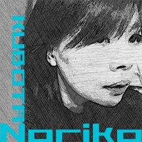

- 賞金
- 最優秀賞（1作品）: 100万円
- 優秀賞:（3作品） 20万円
- 協賛企業／後援団体賞: 最大20万円 + 副賞
- 募集期間
- 〜 （募集開始まで少々お待ちください）
- 表彰式
- （予定）
「HTML5 Japan Cup」とは
HTML5 Japan Cup（5jCup）。それは、Web技術者とか、デザイナーとか、エンジニアとか、そんな風に呼ばれるぼくらが創る、ぼくらのためのアワードです。
ただひたすらぼくらが楽しめて、熱くなれて、創造力を限界まで発揮できる、そんなアワードを目指しています。
思わずのめり込んでしまうようなテーマや豪華素材、燃えざるを得ないような賞が、超豪華なスポンサー陣から提供されます！予告期間である今はまだ詳しく明かせませんが（スポンサー一覧をご覧頂いて、想像してください）、皆様の知力、センス、発想力、集中力、そして努力の限りを尽くすに値するアワードにできるよう、全力を尽くしています。乞うご期待！
二ヶ月の作品募集期間中、ハッカソンや<htmlday>（今年もやります！）、そしてスポンサー陣による公式イベントも盛りだくさん！そして、豪華なメディアスポンサー陣が、ぼくらの努力を世に広めるお手伝いをしてくれます。
2014年前半の、日本全国のWebデザイナー／エンジニアを熱くする。それがHTML5 Japan Cupの使命です。
そしてそれはきっと、「世界」に繋がる道。日本はきっとそのうち、世界のWebシーンをリードする存在になる。そう信じるから、「World Cup」を連想させる「Japan Cup」という名前を付けました。
ぼくらが、ぼくらの心に火を付ける。5jCupは、そんなアワードを目指しています。
ボランティアスタッフ、大募集！
「ぼくらの、アワード。」ってコピーは伊達じゃありません。誰もがこのアワードづくりに参加できます。
5jCup運営ボランティアは、今までと違う新しい何かに出会えるチャンスかも！色々なメディアに記事を寄稿したり、アワードに関連した色々なイベントに自由に参加したり、有名人や有名企業の人に出会えたり...
色んな体験に出会えるチャンスが盛りだくさんです。意外と、人生変わっちゃうかも知れません:-)
自分のスキルで役に立てるか不安、という方も心配いりません。HTML5 Japan Cupでは、イベントの取材、イベントスタッフ、ブログやソーシャルメディアでの盛り上げなど、たくさんの「やること」「やれること」が待っています。
あなたが今できることだけじゃなく、昔やっていたことや、これから身につけたいことまで、きっと何でも5jCupの役に立てていただけます。よければ、このアワードを素晴らしいものにするためにも、あなたの力を貸してください！
協賛企業・後援団体
HTML5 Japan Cup 2014は全く初めての取り組みにも関わらず、ぼくらWebデザイナー／エンジニアを本気で応援しようと、以下の様な企業・団体が協賛・後援をご了承くださいました。ぜひ一度、この素晴らしい企業・団体様のリストにも目を通してみてください。新鮮な驚きや素敵な出会いが待っている…かも知れませんよ！Webページを公開した時期の都合上、掲載しきれていない企業・団体様もございますが、随時追加していきます。
主催／メインスポンサー
プラチナスポンサー
ゴールドスポンサー

シルバースポンサー

後援
メディアスポンサー

（現時点での）スタッフ一覧
-
白石 俊平（しらいし しゅんぺい）総合プロデューサー
html5j管理人、株式会社オープンウェブ・テクノロジー代表取締役、「(白石俊平と) カッコいいやつら」プロデューサー、読書するエンジニアの会主催、などなど。
@Shumpeiさんをフォロー -
 吉川 徹（よしかわ とおる）
吉川 徹（よしかわ とおる）フリーランスのWebエンジニアとして活動中。html5jのスタッフとして、HTML5の最新動向を追うとともにHTML5の普及促進に務める。また、Google Developer Expert（Chrome）として、Chrome関連の情報発信も行なっている。その他、Webに関する講演や記事執筆、jQuery Mobile担当講師（allWebクリエイター塾）など。著書に「jQuery Mobileパーフェクトガイド」と「HTML5ガイドブック増補改訂版」がある。
@yoshikawa_tさんをフォロー -
窪田 則子（くぼた のりこ）アートディレクター
WEB・スマホアプリデザイナー、イラストレーター。多摩美術大学美術学部デザイン科卒業。企業にて商品企画・開発・デザイン制作を担当後、企業勤務・フリーにてコーポレートサイト、新聞社サイト、スマホアプリ、e-ラーニング、イラスト制作等々携わる。毎年NYでグループ展参加等活動中。 studio endeNeu主催